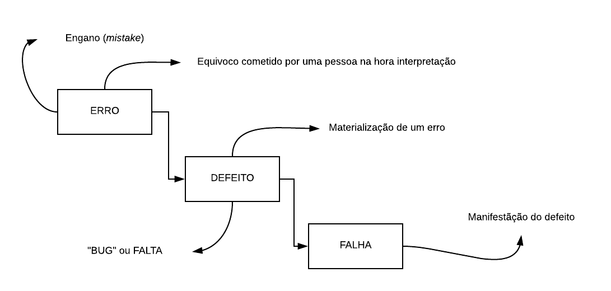
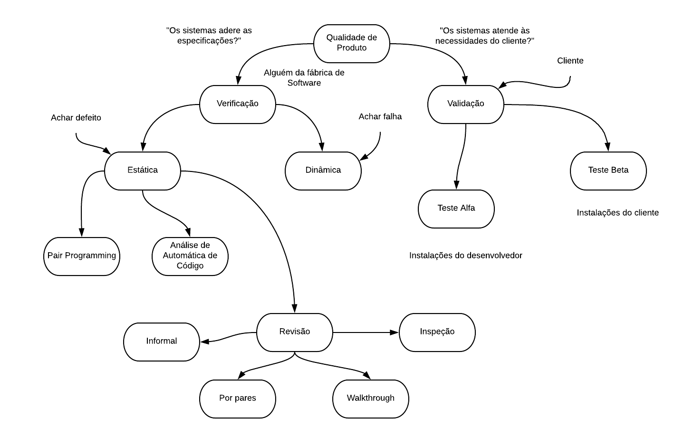
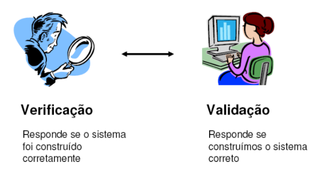

Teste e Qualidade de Softwares
O que é Qualidade de Software?
- Conformidade com especificações e padrões de desenvolvimento documentados
- Atendimento às necessidades dos usuários.
Garantia da qualidade
- Técnicas que garantem que tanto o processo (desenvolvimento) quanto o produto (resultado final) estejam com a qualidade dentro de padrões pré-estabelecidos anteriormente
Porque testar?
- Para se manter a qualidade
- Evitar falhas a hora de execução do software, que podem gerar desde de pequenos prejuízos, a prejuízos mais graves, como por exemplos morte ou perdas financeiras.
Link para saber mais:
Aula 27/08
Notas:
- Propagação de defeitos: quando um defeito é passado de um insumo (artefato) para outro
- Falha: resultado observado que é diferente do resultado esperado. Ocorre somente com o software em execução.
- Artefato: é todo documento do projeto. Desde o caso de uso até o código fonte executável
- Depuração != Teste: é o ato de descobrir, inspecionar o código, em busca de falhas. Já o teste é a técnica de qualidade de software que visa buscar falhas no mesmo.
Diagrama que mostra a diferença entre os conceitos de Erro, Defeito e Falha

Como definir qualidade de software
Grau de aderência de um produto em relação às suas especificações e em relação às necessidades do cliente. Sendo assim, há duas perspectivas: o quão próximo o software está da especificação e da necessidade do cliente.
Diagrama que ilustra bem alguns conceitos que serão vistos na disciplina

O que é teste?
Porque testar?
Princípios do teste
- Teste demonstra a presença de defeitos não sua ausência
- Teste exaustivo é impossível (inviável)
- Teste antecipado (Modelo em V)
- Agrupamento de defeitos (Princípio de Pareto)
- Paradoxo do Pesticida
- Teste depende do contexto
- A ilusão da ausência de erros (Satisfação do cliente)
Aula 03/09
3 Ps:
- Processo: receita de bolo. Sequencia de passos para um fim
- Projeto: empreendimento temporário, onde um equipe realiza o desenvolvimento de um produto ou serviço
- Produto: é o software em si
Processo de Desenvolvimento de Software
- Um processo é composto por atividades, que são compostas por tarefas e esta por passos.
Modelo em Cascata
- Criado em 1970
Link para o primeiro texto sobre o processo
Modelo em V
- Criado pelo Rook, pedido pelo Ministério da Defesa da Alemanha
- Ataca um dos problemas do cascata, que é evitar a propagação dos defeitos, ao descobrí-los cedo.
- Ao mesmo tempo que o software é construído, é planejado os testes
Verificação e validação
- Verificação: feita pela equipe de desenvolvimento (testadores e programadores)
- Validação: feita pelo cliente ou seu representante
Imagem que ilustra tal diferença

Dimensões do teste
Ao planejar o teste, é necessário estabelecer uma estratégia de teste. Tal estratégia, se baseia nas dimensões do teste
A abordagem bottom-up de teste
Se testa o software, começando das menores partes, para isolar os defeitos.
Tipos de teste
- Para se entender, leva-se em consideração os tipos de requisitos, funcionais e não-funcionais
Técnicas de teste
Leva-se em consideração o insumo que o testador terá. Se for ter acesso ao código fonte, é teste baseado em estrutura (caixa branca). Do contrário, tendo somente as especificações, é teste de baseado em especificação (caixa preta)
Aula 24/09 - Entendendo as dimensões do teste
Níveis de Teste
Os níveis de teste surgem no Modelo V. Inicialmente, os níveis de teste indicavam qual o nível do teste em relação à etapa de desenvolvimento. Atualmente, eles indicam a granularidade do item que está sendo testado.
- Testes de unidade
- Desenvolvedor
- Geralmente caixa branca
- Teste de integração
- Desenvolvedor
- Teste de sistema
- Equipe de teste
- Foco no funcionamento do sistema como um todo
- Teste de aceitação
- Cliente
- Validar o software
Tipos de Teste
- Funcional
- Baseado nos requisitos funcionais
- Casos de Uso
- Regras de negócio
- História de usuário
- Pode ser usado desda especificação até a operação do sistema
- Baseado nos requisitos funcionais
- Usabilidade
- Como medir a facilidade?
- Lei de Nielsen-Norman: Usabilidade é quantificável
- São dependentes de ferramentas, mas não automatizáveis
- Ferramentas
- Morae (https://www.techsmith.com/morae.html)
- Rastreamento de olhar:
- Mapas de calor
- Caminhos Sacádicos
- Normas sobre Acessibilidade de Software: ISO/IEC 25010
- Acessibilidade: é a usabilidade para pessoas com deficiência
- Diretrizes WCAG e eMAG
- Como medir a facilidade?
- Desempenho
- Capacidade de acesso concorrente
- Tempo de resposta
- Consumo de recursos
- Quantidade de acessos concorrentes:
- Testes de Carga: dentro das condições esperadas de carga, como seu sistema fica?
- Testes de Estresse: impor uma carga acima do esperado
- Testes de Capacidade: qual a capacidade do meu sistema?
- Testes de Resistência: aplicar teste de carga continuamente, para ver até onde o sistema
- Quantidade de dados:
- Testes de Volume: qual volume máximo de dados meu sistema suporta
- Contingência / Recuperação
- Quanto tempo ocorre a recuperação após uma falha
- Métrica: Tempo médio de Reparo (MTTR)
- Acordo de Nível de Serviço
- Verifica se sua política de contingência funciona
- Documentar o Processo de Recuperação
- Segurança/Vulnerabilidade
- Os meus dados estão protegidos?
- Quais vulnerabilidades meu sistema está sujeito?
- Ferramenta bem usada: OWASP ZAP
- Ferramentas
- Estáticos
- SonarQube
- PMD
- Find Bugs
- Dinâmicos
- WebScarab
- Kali Linux
- Zed Attack Proxy
- Estáticos
- Orgão que definem diretrizes de segurança web
- OWASP
Técnicas de teste
- Baseada em Estrutura (caixa branca)
- Insumo: código fonte
- Superfície do software: código fonte
- Baseada em Especificação (caixa preta)
- Insumo: documentação
- Superfície: interface do usuário
O que teste exploratório?
Também conhecido como Monkey Testing, é quando o testador, de maneira bem simples e sem nenhum planejamento, fica testando de maneira aleatória o sistema (daí o termo Monkey Testing).
Critério de Teste e Casos de Teste
Em casos de teste para requisitos com range de valores é trabalhar nos limites
Ao se testar, isole o requisito que se quer testar
- Caso de teste: dados de entrada + resultado esperado
- Procedimento de teste: são os passos para a execução de um ou mais caso(s) de teste
Critérios de Seleção de Casos de Teste
- Particionamento em Classes de Equivalência: aplica-se a restrição de domínio (range de valores) no contexto de Banco de Dados.
- Análise de Valor-Limite: é uma melhoria do item anterior, que, em vez de escolher aleatoriamente um valor qualquer, se escolhe os valores limites na hora de testar
- Tabela de Decisão
- Transição de Estados: testa-se a partir do diagrama de máquina de estados
- Array Ortogonal (todos-os-pares ou All Pairs):
- Em vez de testar todas as combinações, eu testo pares delas
- Para se colocar o indiferente, é necessário colocar um til com o valor do range
~ - Ferramentas:
Teste relacionado a mudanças
- Teste de confirmação (resteste): eu testo o que havia falhado anteriormente
- Teste de regressão: garantir que defeitos corrigidos não tenham inseridos outros defeitos em outras partes do sistema. Restestar todo o sistema. Ai surge a necessidade de se automatizar os testes